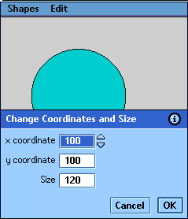

|
| |
The source files for a CS Help example project and its associated application are included with this documentation. A second CS Help project is provided to demonstrate how styles and formatting should be used.
|
The Shapes application, Shapes.app, is used to
demonstrate context sensitivity in an application. The application
consists of three controls—a square view, a circle view and a dialog.
The application can be found in epoc32ex\ToolsAndUtilities\.

Circle view with dialog box
A CS Help project has been created to provide a topic for each of
the three controls. The project files are stored in the directory
epoc32ex\ToolsAndUtilities\CsHelp\project\. They include the
project file ShapesProj.cshlp, the source rtf file
Shapes.rtf, and the customisation file Custom.xml.
The CS Help files are compiled to
Epoc32\wins\c\system\help\.
The project file used in the example has a .cshlp extension so that it may be used with the CS Help compiler GUI tool; see the CS Help compiler GUI guide. Project files may however use the extension .xml for use with the command line compiler only.
The files should be used as a further reference of CS Help project source documents, and/or as the basis for new projects.
|
A second CS Help project is provided—a quick start guide to CS Help containing additional reference and a test topic for help authors. Its main purpose is to show how styles and formatting should be used. Unlike most help files, it is not directly associated with an application.
Its project files are also stored in the directory
epoc32ex\ToolsAndUtilities\CsHelp\project\. They include the
project file CsHelp.cshlp, the source rtf file CsHelp.rtf, and the customisation
file Custom.xml.
Another project file CombinedProj.cshlp is also
provided. It demonstrates how all the topics from CsHelp.rtf and
Shapes.rtf can be combined into a single CS Help file.
Copyright ©2002 Symbian Ltd. 6.1-00174 |
|